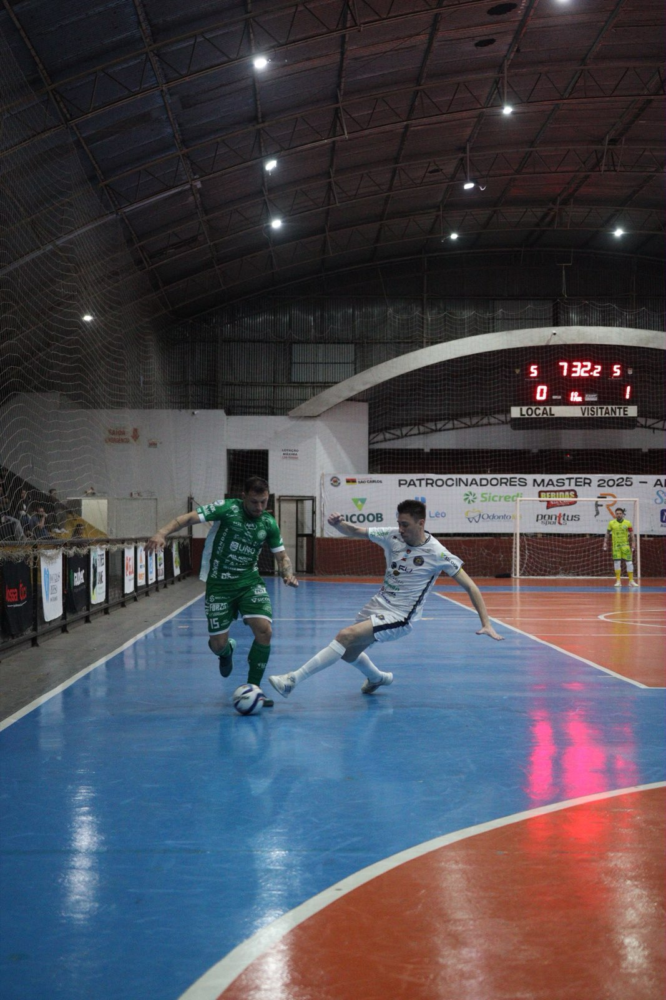
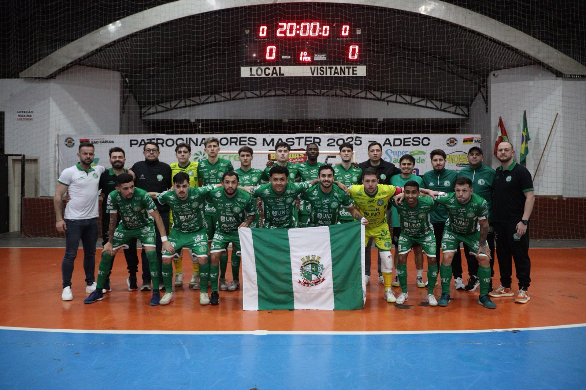

A Associação Chapecoense de Futsal ficou em segundo lugar na etapa microrregional dos Jogos Abertos de Santa Catarina (JASC). Representando Chapecó, o Verdão das Quadras foi superado pelo time de Palmitos por 4 a 3, na noite desta quarta-feira (12), no Ginásio Municipal de São Carlos.

O adversário abriu o placar. O goleiro Luciano acertou o chute e balançou a rede. O ala Kassula igualou no primeiro tempo em tiro livre. Na segunda etapa, o fixo Alemão anotou dois gols e deixou Palmitos em vantagem. O ala Maranhão diminuiu a diferença, mas Alemão voltou a marcar. Nos últimos segundos, o pivô João Seco descontou. Os dois finalistas já estavam classificados para a fase regional que será na cidade de Seara, de 16 a 20 de setembro, além de São Lourenço do Oeste e Galvão, que chegaram à semifinal.

Próximo desafio
Agora, a Chapecoense intensifica a preparação para o jogo contra a Apaff/Floripa. O duelo é antecipado da nona rodada da Série Ouro do futsal catarinense e ocorrerá neste sábado (15), às 17h, no Ginásio Plínio Arlindo De Nes (SER Aurora), em Chapecó. A equipe verde-branca busca a vitória para se manter na liderança do campeonato estadual.
Os ingressos já estão à venda. A entrada custa R$ 20,00 (1º lote), R$ 25,00 (2º lote) e R$ 10,00 (meia). Crianças até 12 anos não pagam, mas devem estar acompanhadas por um responsável e portando documento de identificação. É possível comprar nas lojas Oficial da Chape Futsal (anexo à Classic Uniformes) e iXap Sports, além do site ingressojogo.com.br. Os bilhetes também serão vendidos na hora, no ginásio.
Crédito das fotos: @rogersilva_fotografia/@achapefutsal